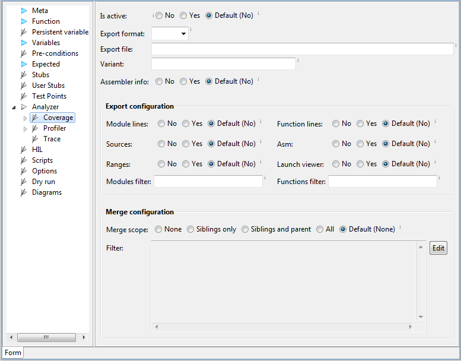
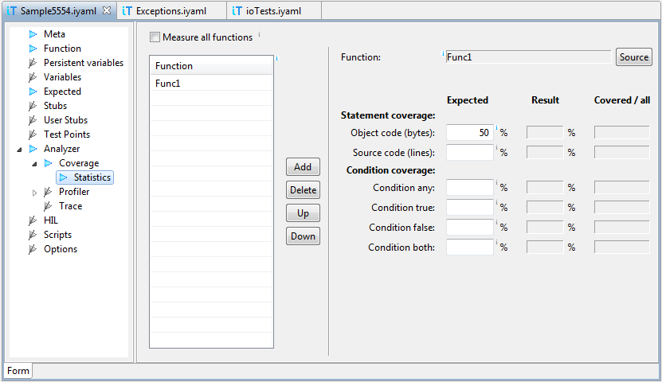

Another option for accumulation of coverage recordings is merging of analyzer files. If Merge scope is set to something else than None, then analyzer files from other already executed test cases will be merged. To see which test cases are used for merging, click Edit button for merge filter.The filter can be used to futher limit the set of test cases.Expected minimum coverage can be specified in section Statistics. If coverage is lower than specified, test fails.
